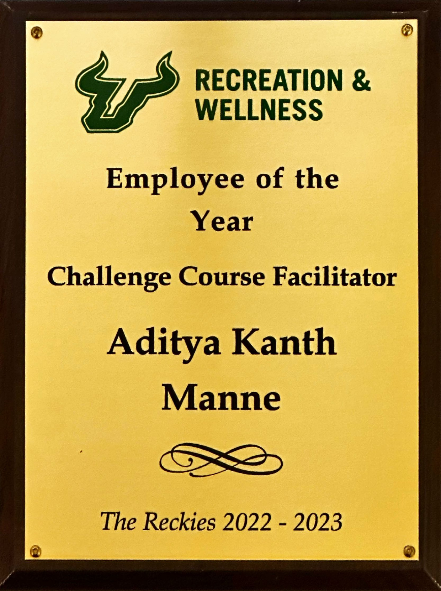

03 : About me
Summary



Education
University of South Florida
- Degree : Masters in Engineering Management
- Major : Data Science
- Duration : January 2022 to December 2023
- GPA : 3.83 / 4
In my Master's program, I completed courses such as Algorithms and Data Structures, Web Programming, Introduction to Data Science and Analytics, Database Concepts, and Human-Computer Interactions. These courses equipped me with a range of valuable skills and knowledge. I learned to design efficient algorithms and data structures, develop dynamic websites using HTML, CSS, and JavaScript, analyze and interpret large datasets using statistical analysis and machine learning techniques, manage databases effectively with database design and SQL querying skills, and create user-friendly interfaces through user-centered design principles and usability testing. These experiences have provided me with a diverse skill set and a strong foundation in computer science, enabling me to approach complex challenges in technology with confidence.
Jawaharlal Nehru Technological University
- Degree : Bachelors in Mechanical Engineering
- Major : Industrial Engineering
- Duration : August 2016 to November 2020
- GPA : 3.47 / 4
In my Bachelor's program, I acquired a diverse skill set and comprehensive knowledge. I learned to design efficient mechanical systems, analyze and optimize complex structures, apply principles of thermodynamics and fluid mechanics, and solve engineering problems using mathematical modeling and simulations. Additionally, I gained proficiency in CAD software for design and drafting, conducted experiments for data analysis, and collaborated on projects requiring precision and innovation in mechanical engineering.